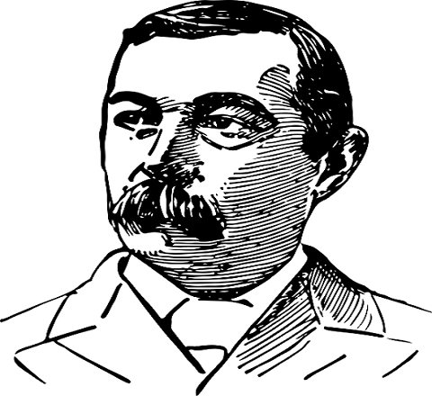

Tribute to Arthur Conan Doyle
The creator of Sherlock Holmes

Sherlock Holmesis a fictional detective created by British author Sir Arthur Conan Doyle.
Here is The Timeline of Sir Arthur Conan Doyle
- 1859 Born in Edinburgh, Scotland
- 1876 Studied Medicine at University of Edinburgh Medical School
- 1885 Doyle married Louisa Hawkins. They had 2 children. Hawkins died of tuberculosis in 1906
- 1886 Wrote Sherlock Holmes' A Study in Scarlet
- 1896 Richenback Falls was published from the story "The Final Problem
- 1901 The Hound of Baskerville
- 1903 The Adventure of the Empty house was released after a 10 year break
- 1907 Married Jean Elizabeth Leckie. They had 3 children together. The youngest, a military officer in the Women's Royal airforce Jean Lena Annette, died in 1997.
- 1912 Doyle released The Lost World featuring Professor Challenger
- 1922 Published The Coming of the Fairies based on the Cottingley Fairies' photographs
- 1930 On July 7th, Doyle died of a heart attack. He is buried in Surrey, England.
Learn More abouth Arthur Conan Doyle“Mediocrity knows nothing higher than itself; but talent instantly recognizes genius.”
--Arthur Conan Doyle